Kirigami Energy Dissipation
Programming Geometry for Controlled Instability
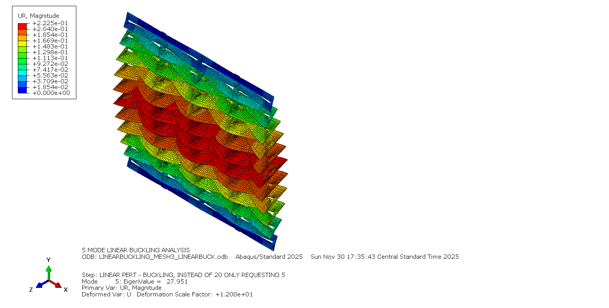
This project investigates kirigami cut patterns as programmable geometric imperfections for controlling deformation, buckling and energy absorption in thin metallic structures.
Geometry Programming

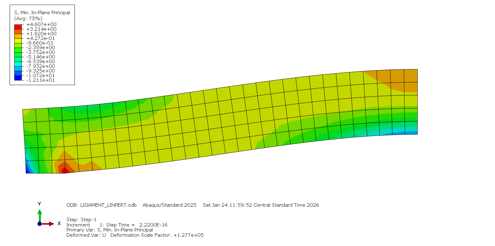
Eigenvalue Buckling
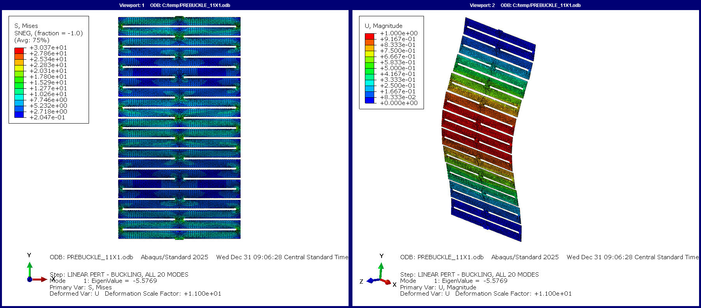
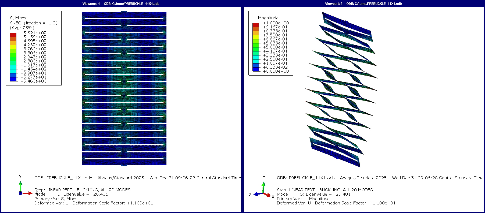
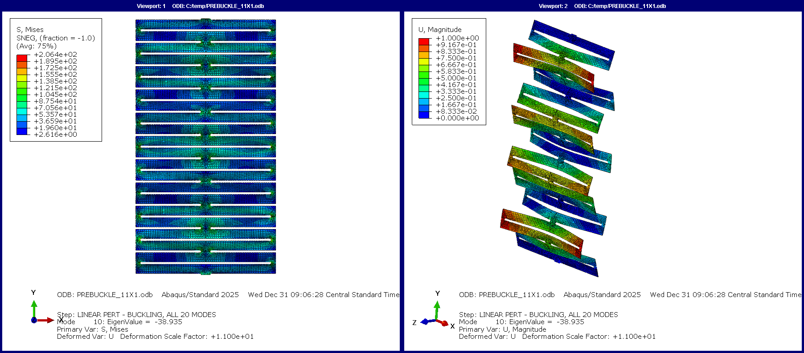
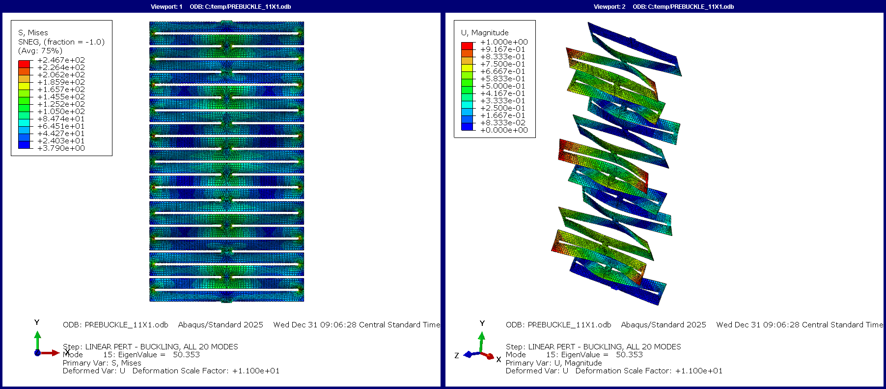
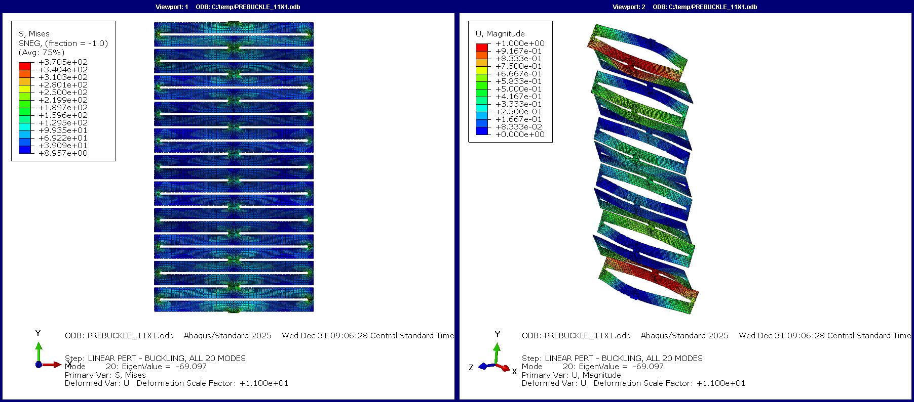
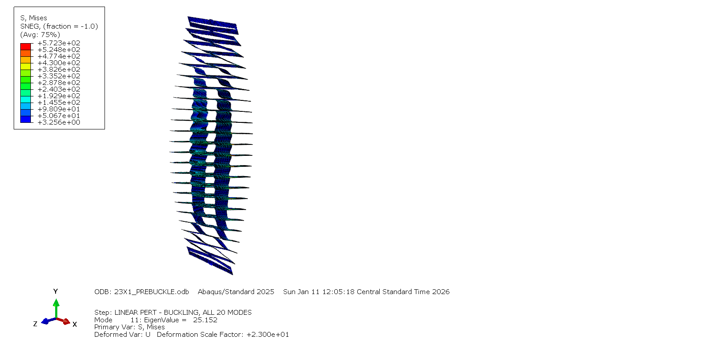
Finite Element Results
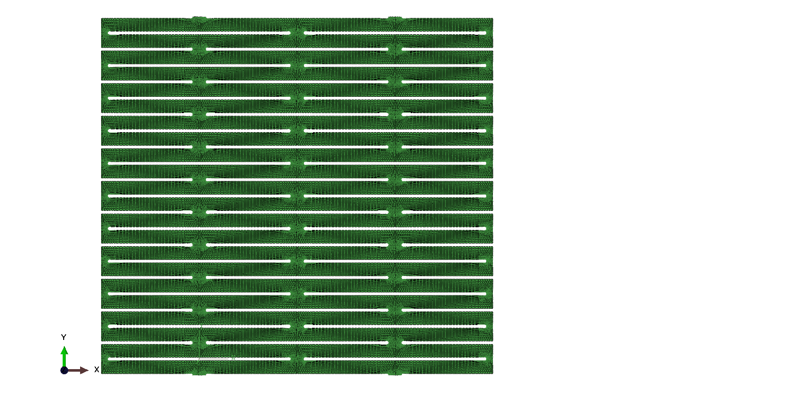
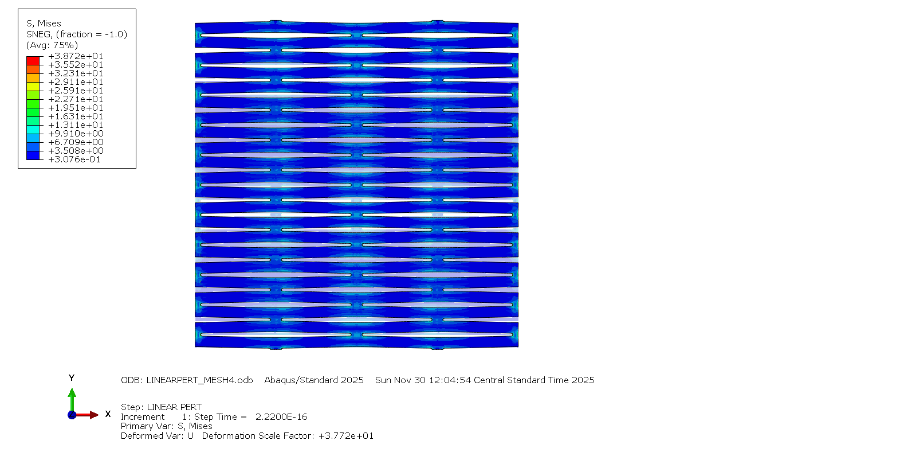
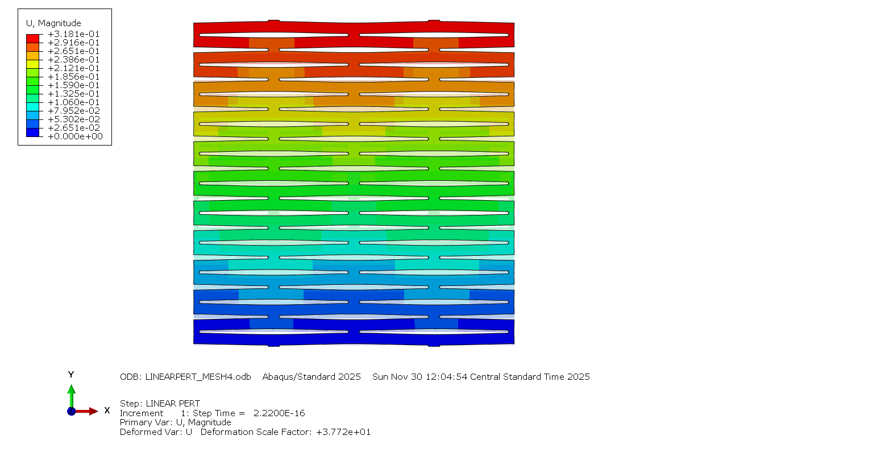
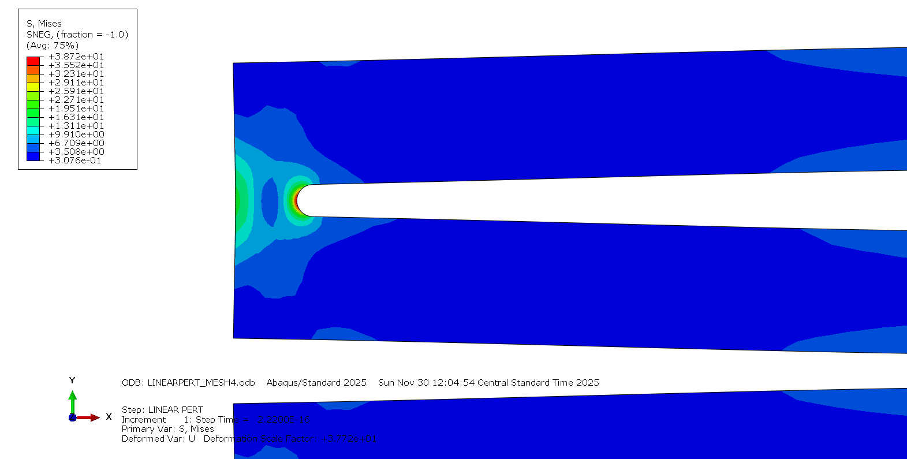
Experimental Validation


Applications
Applications include crash attenuation, fall-arrest systems, adaptive structures and programmable energy absorption.